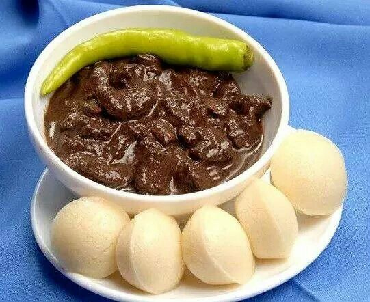
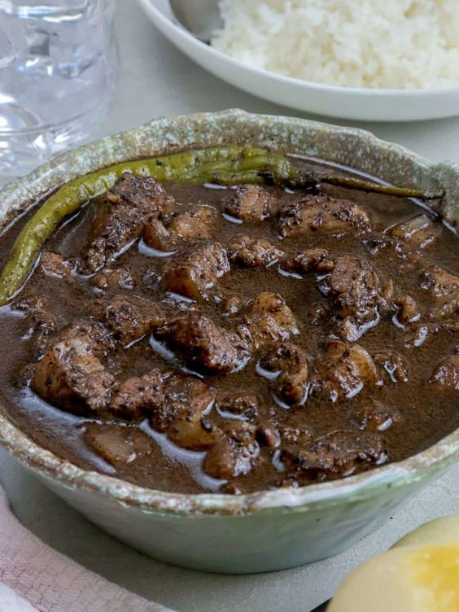

Dinuguan and Puto

Dinuguan at puto is considered as a good meal combination for most Filipinos. This refers to pork blood stew and steamed rice cake. The pork is sauteed in garlic and onions. Water, vinegar, and pork blood are added and then cooked until it becomes nice and thick. It is best eaten by dipping (or scooping) the blood stew using steamed rice cake (or what is called puto in Filipino) and eating both together.

Ingredients for Pork Dinuguan (serving: good for 6 people)
- 2 lbs. Pork shoulder cubed
- 1 1/4 cups Pork blood
- 1 piece Knorr Pork Cube
- 4 pieces Long peppers
- 2 pieces Onion chopped
- 6 cloves Garlic minced
- 2 cups Water
- ¾ cup White vinegar
- 3 pieces Bay leaves
- 3 tablespoons Cooking oil
- 1 tablespoon Granulated white sugar
- Salt and ground black pepper to taste
Steps for making Pork Dinuguan
- Heat oil in a cooking pot
- Saute onion for 30 seconds. Add garlic. Continue to cook until onion softens.
- Add pork. Saute for 3 to 5 minutes.
- Pour water. Let boil. Add bay leaves and vinegar. Let the liquid re-boil.
- Add Knorr Pork Cube. Stir. Cover and simmer for 1 hour. Note: add water as needed.
- Add long green peppers and pour pork blood into the pot. Stir. Continue to cook between low to medium heat for 15 minutes while stirring every 3 minutes.
- Add sugar and season with salt and ground black pepper.
- Transfer to a serving bowl. Enjoy.
Ingredients for Puto (serving: good for 3 people)
- 1 cup all-purpose flour
- 1/2 cup granulated white sugar
- 3 teaspoons baking powder
- 1 cup fresh milk
- 1/4 teaspoon vanilla extract
- 3/4 cup shredded sharp cheddar cheese
- 5 cups water for steaming
Steps for making Puto
- Pour the water into a steamer or cooking pot. Let boil.
- Sift flour, sugar, and baking powder. Combine in a bowl. Mix well.
- Gradually add the milk while stirring. Continue to stir until the texture of the mixture becomes smooth.
- Stir-in the vanilla extract and half of the cheese.
- Pour the mixture into small to medium sized molds. Arrange in a steamer. Cover and steam for 25 minutes. Top each puto with the remaining cheese. Steam for 5 minutes more.
- Take the steamed cheese puto out of the steamer. Let it cool down.
- Gently remove the puto from the mold with the help of a spatula.
- Arrange in serving plate. Serve.
- Share and enjoy!